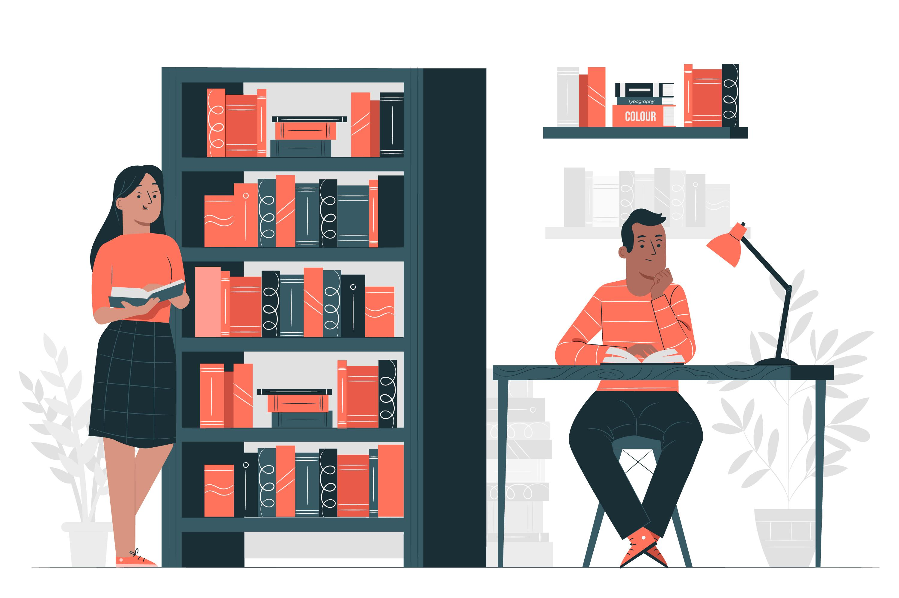

Sobre Nós
O Jornal Escolar é um projeto dedicado a compartilhar as histórias, sucessos e eventos do nosso colégio. Trabalhamos para trazer conteúdo relevante e interessante, feito por alunos e para alunos.
Missão
Promover a comunicação entre os alunos, destacar conquistas acadêmicas e culturais, e cultivar o espírito de comunidade dentro do colégio.
Equipe

António Fernando Luy
Criador Oficial

Outros Criadores
Aldair Raúl
Lastarick Teca
Carlos Alberto

Entrevistadas
Letícia Firmino
Letícia Costa